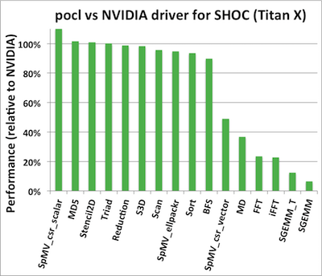

April 2017: NVIDIA GPU support via CUDA backend
pocl now has experimental support for NVIDIA GPU devices via a new backend which makes use of the LLVM NVPTX backend and the CUDA driver API. This work was primarily carried out by James Price from the High Performance Computing group at the University of Bristol.
Status
Instructions for building and using the CUDA backend can be found in the user manual.
Although this backend is still a work in progress, many core features are implemented, allowing real OpenCL applications to be run. For example, we can run all of the OpenCL benchmarks from SHOC, with the exception of those that require support for image types. The performance on the SHOC benchmarks compared to NVIDIA's own OpenCL implementation is shown below. While there is still a lot of room for improvement in a few of these benchmarks, many of them achieve performance close to the NVIDIA driver, and in one case exceeds it. At this stage we have only been focusing on implementing functionality, so we believe there is the potential to significantly improve the performance of this backend in the future.
One key advantage of having an open source alternative to the proprietary NVIDIA OpenCL implementation is our ability to add support for things that NVIDIA doesn't. For example, this backend allows us to run SPIR-based applications on NVIDIA devices, such as SYCL codes compiled with Codeplay's ComputeCpp compiler. We can also use this backend on ARM-based platforms with NVIDIA GPUs, such as the Jetson TK1 and TX1 development boards, which NVIDIA doesn't publicly release OpenCL support for. In the future, this could extend to adding support for OpenCL subgroups, SPIR-V consumption, or other features from recent versions of the OpenCL standard. Finally, since this backend makes use of CUDA under-the-hood, we can also use all of the CUDA development tools that NVIDIA provide (such as their visual profiler), many of which currently don't support OpenCL directly.
Known limitations (at the time of writing):
- image types and samplers are unimplemented
- atomics are unimplemented
- global offsets are unimplemented
- get_work_dim() is unimplemented
- printf format support is incomplete
Contributing
We welcome any contributions in the form of bug reports and pull requests. In particular, we are keen to see contributions that fill in the remaining functionality, as well as performance improvements. If you're interested in helping out but aren't sure what to work on, drop into the pocl IRC or get in touch with James Price for more information.